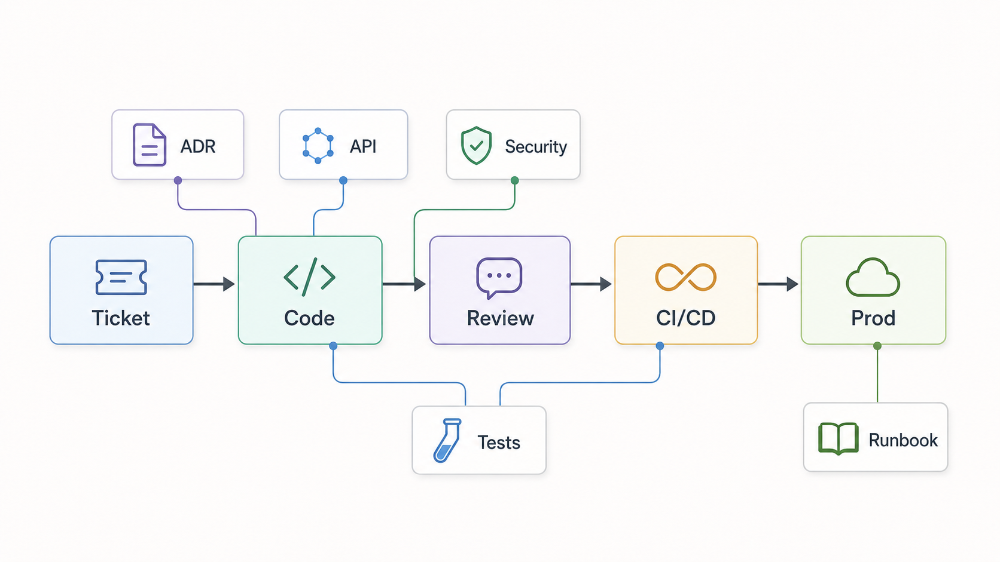
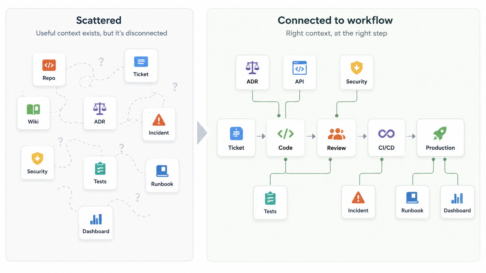

The first AI coding assistant demo usually looks clean.
A developer asks for a small function, a test, a refactor, or a documentation draft. The assistant responds quickly. The code looks reasonable. The test passes. Everyone can see why teams are interested.
Then the same assistant is used on real enterprise work.
A developer picks up a ticket to add a new endpoint to an internal service. The assistant understands the local code style well enough. It generates a handler, a few tests, and a short documentation update. Locally, everything passes.
During review, the problems appear.
The assistant used an API pattern that was deprecated months ago. The current guidance exists, but it is buried in a platform wiki page. The relevant architecture decision record is not linked from the repository. A recent incident changed the recommended retry behavior, but that lesson lives in an incident review document. The ticket does not clearly connect to the owning service, runbook, or deployment constraints. The generated code passes local tests but violates a security rule around authorization checks.
The organization has the knowledge. It is just not cleanly connected to the work.
This article is about AI-assisted engineering workflows, not every form of enterprise AI adoption. In software delivery, adoption often starts as a developer tooling rollout. But real work depends on context spread across repositories, tickets, API specifications, runbooks, incidents, tests, architecture decisions, standards, dashboards, security policies, and review history.
DORA's guidance on AI-accessible internal data points to this practical reality: AI tools are more useful when they can securely access relevant internal context such as codebases, documentation, operational metrics, architecture diagrams, wikis, and style guides.
That does not mean "connect everything to the assistant."
The real adoption work is making engineering context usable, trusted, permission-aware, and available where people and AI assistants actually do the work.
AI needs context, not just prompts
A prompt describes what the developer wants.
Context explains what "good" means in this codebase, on this platform, in this organization, at this point in time.
For a simple utility function, the local file and a short prompt may be enough. Enterprise software work is rarely that isolated. A useful change often depends on service ownership, architecture boundaries, platform constraints, API conventions, test strategy, deployment rules, security requirements, incident history, and review expectations.
If a developer asks, "Add a new endpoint for this workflow," the assistant may need to know which API style is current, which authorization checks are required, which ADR explains the service boundary, which runbook describes operational constraints, and which CI checks are expected before merge.
Without that context, the assistant may still produce code. Some of it may compile and pass local tests. But it may be misaligned with the way the system is supposed to work.
Better context can make AI output more relevant and easier to review. It does not make the output automatically correct. Correctness still depends on design judgment, tests, review, security checks, runtime behavior, and production feedback.
Repository-level guidance is one practical example. GitHub documents repository custom instructions as a way to give Copilot project-specific guidance about how to understand, build, test, and validate changes. That can help an assistant follow local conventions, but it is still guidance. It needs ownership, maintenance, and normal engineering controls around it.
Security expectations are similar. The OpenSSF guidance on AI code assistant instructions recommends making security concerns explicit, including input validation, authorization, secrets management, secure defaults, dependency review, and CI/CD security. Security guidance hidden far away from the coding workflow is easy for both humans and assistants to miss.
Most enterprises already have useful context
It is tempting to say, "Our AI tools need more knowledge."
That is partly true, but incomplete.
Most enterprises already have useful engineering context. It lives in repositories, tickets, API specs, runbooks, incident reviews, tests, ADRs, design documents, deployment records, platform standards, dashboards, security policies, pull request discussions, and code review history.
The problem is fragmentation.

The current API standard is in a wiki page. The superseding architecture decision is in a different repository. The migration note is attached to an old ticket. The runbook is accurate, but nobody linked it from the service README. The security rule is known by reviewers, but not encoded in tests, templates, instructions, or review checklists. The incident review contains an important lesson, but it never made its way into design guidance.
Humans already struggle with this. AI assistants make the problem more visible.
The documentation chapter in Software Engineering at Google describes familiar problems with documentation: weak ownership, obsolete information, competing documents, and difficulty knowing which source to trust. It also argues that documentation should be treated as part of engineering work, with ownership, review, freshness, and canonical sources where possible. DORA's work on documentation quality uses similar attributes: clarity, findability, and reliability.
These are software delivery concerns, not only documentation concerns.
When a developer cannot find the current standard, delivery slows down. When reviewers need to explain the same hidden rule repeatedly, review quality suffers. When an old page ranks higher than the current decision, teams repeat past mistakes. When incident learning does not flow back into implementation guidance, the organization pays for the same lesson more than once.
Architecture Decision Records are a good example of valuable context that often gets disconnected from daily work. Martin Fowler describes an Architecture Decision Record as a short document that captures a decision, its context, and its consequences. He also notes that when decisions change, old ADRs should be superseded rather than silently rewritten.
That matters for AI-assisted work because the assistant does not only need to know what pattern exists. It needs help understanding whether the pattern still applies.
What good engineering context looks like
Good engineering context is not the same as having more documents.
More documents can make the problem worse if they are stale, duplicated, or unowned. A large searchable pile of conflicting guidance is still a pile of conflicting guidance.
Useful context has a few practical properties.
First, people and tools can discover it when they need it. A security standard that exists only in a forgotten wiki page is not really available to the workflow. A runbook that is not linked from the service repository may be technically present, but operationally absent.
Second, the context makes freshness visible. Deprecated API patterns point to replacements. Old ADRs link to superseding decisions. Migration notes say whether they are active, completed, or obsolete. This matters because search can find both old and new guidance. The assistant may retrieve either. The developer then has to guess which one is current.
Important context also has an owner. A service README, platform standard, ADR index, runbook, or assistant instruction file does not need heavy process around it, but it does need a clear path for updates.
Permissions need the same care. Enterprise context is not all equally safe to expose. Incident records may contain sensitive details. Security documents may describe vulnerabilities or controls. Operational dashboards may expose customer-related information. Tickets may include confidential business context. DORA's guidance warns against broad shared access patterns such as "super user mode" and recommends least-privilege retrieval using the user's own credentials where possible.
Placement matters too. Context is more useful when it appears where decisions are made: repository instructions, service READMEs, linked ADRs, PR templates, review checklists, CI/CD messages, ticket links, platform templates, or runbook links. If a developer only sees the security standard after a reviewer rejects the pull request, the context arrived too late.
For tools, sources need enough structure to be useful. Not every organization needs a knowledge graph. Not every document needs strict metadata. But if tools are expected to retrieve and use engineering context, clear titles, visible owners, superseded guidance, and intentional links between services, tickets, ADRs, runbooks, and standards all help.
Finally, the workflow should remain reviewable by humans. When an assistant suggests a change based on internal context, reviewers should be able to inspect the relevant sources or understand which guidance is being applied. If nobody can see the basis for a recommendation, the workflow becomes harder to trust.
Good context helps humans first. If the system only works for the AI tool, it is probably fragile.
"Just connect everything to AI" is risky
Once teams understand the context problem, the obvious reaction is to connect more systems.
That can help, but it needs care.
Connecting AI to internal systems is a security design problem, not just an integration task. Enterprise context may include sensitive information, customer data, security details, incident history, privileged operational knowledge, and internal business plans.
More context is not automatically better.
The NIST Generative AI Profile emphasizes governance, risk mapping, measurement, and lifecycle management for generative AI systems. OWASP's Top 10 for Large Language Model Applications also highlights risks such as prompt injection, sensitive information disclosure, and excessive agency.
These risks do not mean teams should avoid AI-assisted workflows. They mean the access model matters.
A coding assistant helping with a local refactor does not need the same access as an agent proposing a production configuration change. A tool summarizing public API docs has a different risk profile from one reading incident reports and security exceptions. A workflow that drafts code for human review is different from one that can open pull requests, modify infrastructure, or trigger deployment steps.
Good governance should clarify safe paths:
- Which workflows are approved?
- Which data can be accessed?
- Under whose identity?
- Where is human review required?
- What should be logged or auditable?
- What happens when retrieval fails or access is denied?
This is not bureaucracy for its own sake. It is how teams make AI adoption safer and easier to reason about.
A practical adoption path
Trying to organize all enterprise knowledge before using AI is too large and too slow.
Start with one real workflow.
Pick something concrete: adding a new API endpoint, fixing a production bug, onboarding to a service, reviewing a pull request, creating a service from a platform template, handling a dependency upgrade, or responding to a recurring incident type.
Then map the context needed to do that workflow safely.
For example, if the workflow is "add a new API endpoint," ask which repository contains the service, which ticket defines the behavior, which API standard applies, which authentication and authorization rules matter, which ADRs explain the service boundary, which tests are expected, and which deployment checks apply.
This exercise usually reveals the real adoption work. Some sources are clear. Some are stale. Some conflict. Some are accurate but disconnected. Some require permissions that are not obvious. Some exist only in the heads of experienced reviewers.
Then clean the path.
If three documents describe the API standard, decide which one wins. Archive or label the others. If an ADR has been superseded, link it to the current decision. If a wiki page is still useful, give it an owner. If a standard matters during coding, surface it in the repository, PR template, assistant instructions, or CI feedback.
Do not index confusion and call it context.
After that, make permissions explicit. Decide what the assistant can retrieve, under whose identity, for which workflow, and with what audit expectations. Avoid broad shared accounts where possible. Keep access tied to the user and the task.
Finally, measure the workflow.
Usage alone is a weak signal. Prompt volume and generated lines of code do not tell you whether adoption is improving delivery.
Better questions are more practical: Are reviews easier? Are fewer changes rejected for known standards violations? Are developers finding the right guidance faster? Are security and platform expectations clearer? Are production risks being caught earlier? Are reviewers spending less time correcting basic context and more time reviewing design?
DORA's guidance on healthy data ecosystems recommends ownership, sources of truth, quality checks, and governed access. That is a useful framing here. Treat engineering context as part of the delivery system, not as exhaust from previous work.
Limitations and counterpoints
Context work will not fix every AI adoption problem.
Some tasks are still a poor fit for AI assistance. Some systems are too sensitive for broad retrieval. Some codebases have design problems that better documentation cannot hide. Some generated changes will still be wrong, insecure, or hard to maintain.
There is also a cost to maintaining context. Teams can create too many documents, too many checklists, and too many instruction files. If every workflow requires reading a long process page, developers will work around it. If assistant instructions become a dumping ground for every preference, they will become noisy and contradictory.
The goal is not to document everything.
The goal is to make the important context for a workflow findable, current, owned, permission-aware, and reviewable.
Tools can help. Retrieval systems, repository instructions, platform templates, internal developer portals, knowledge graphs, and coding agents can all be useful. But none of them remove the harder work: deciding which sources are authoritative, who owns them, what access is appropriate, and how humans review the output.
Better context improves the conditions for AI-assisted work. It does not remove engineering accountability.
Three practical takeaways
- Start from workflows, not tools. Pick one real engineering workflow and map the context needed to do it safely.
- Better context means more than better search. Context needs ownership, freshness, permissions, and clear sources of truth.
- AI access should be scoped and reviewable. More context is useful only when it is tied to permissions, workflow boundaries, and human accountability.
Make the engineering system legible
Return to the opening scenario.
The assistant did not struggle because the enterprise had no knowledge. The organization had the API standard, the ADR, the incident review, the runbook, the security policy, and the review expectation. They were scattered across tools, unevenly maintained, and unavailable at the point of work.
That is the real adoption problem.
Buying a smarter assistant may help, but it will not automatically make the engineering system understandable. If standards are stale, ownership is unclear, permissions are messy, and review expectations live only in people's heads, AI may expose or amplify those problems.
The useful work is more grounded: make the current guidance easier to find, remove or label stale documents, link decisions to repositories, put security and platform expectations closer to coding and review, clarify permissions, and keep humans accountable for design, risk, and production impact.
Enterprise AI adoption is not mainly about giving developers a new tool.
It is about making the engineering system legible to developers, reviewers, platform teams, security teams, and, where appropriate, AI assistants working under clear permissions and human accountability.